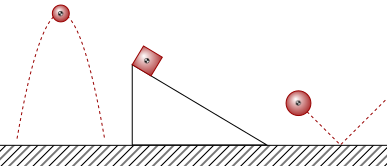
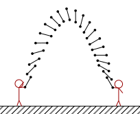
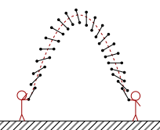

So far, we have analyzed objects as if they were particles. We also haven't exactly defined what a particle is, so let's define it here.
We have used particles as an approximation for most of our objects. For example, we analyzed how projectiles move in the air, how we push boxes on inclined planes, and how things collide as if they were particles.
This approximation works because, generally, each portion of the object in general moves in the same way as any other portion. For example, in a ball thrown in the air, each part of the ball moves approximately the same as any other part.

One limitation of this approach is that particles can't rotate since they have no radius. For example, in baton twirling, people throw batons and catch them. These batons rotate while they move in the air.

Question 1
(HRK 3.38) Can you think of physical phenomena involving the Earth in which the Earth cannot be treated as a particle?
Answer
Here are two examples. The Earth casts a shadow on the moon during a lunar eclipse; this implies the Earth has size, which means it isn't a particle.
Another example is considering the rotation of the Earth as an oblate spheroid. If we approximate the Earth as a particle in this case, it can't rotate.
Let's return to those baton twirlers. Despite how complicated the motion looks, if we eyeball it, it seems that it still moves in a parabolic arc; just like how our particle approximation said it would do.
In fact, we can pinpoint a single point on the baton, and note how it goes through this parabola precisely.

If, hypothetically, we can get this point, we could treat these rigid objects as particles and simplify their calculations heavily. Thankfully, we can. Thus, we define this point.
We use the term "center of mass" to determine a point in the object which moves like if it were a particle. At this point, we can simplify our calculations by not caring about how the object rotates or other things which may affect the object.